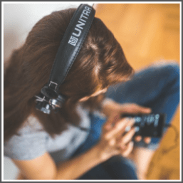

If you love listening to music and can write an opinion based on your review of the music, then this way can be an excellent opportunity for you to make some money.
There are companies, advertising agencies and other individual music creators who need people to listen to their music, review it and write an opinion.
These opinions help them to check whether their music is the right fit for their project or it might need some improvement.
Anyone who loves to listen to music.
1. Excellent written communication skills.
2. Ability to formulate and present your opinion in clear and precise manner.
Signup on the following legitimate sites as music lovers:
To be frank, the payment you get for rating and reviewing music isn’t that great.
You can make few dollars here and there but you can’t make a living out of it, but it’s a good way to earn some extra bucks and utilize your free time.